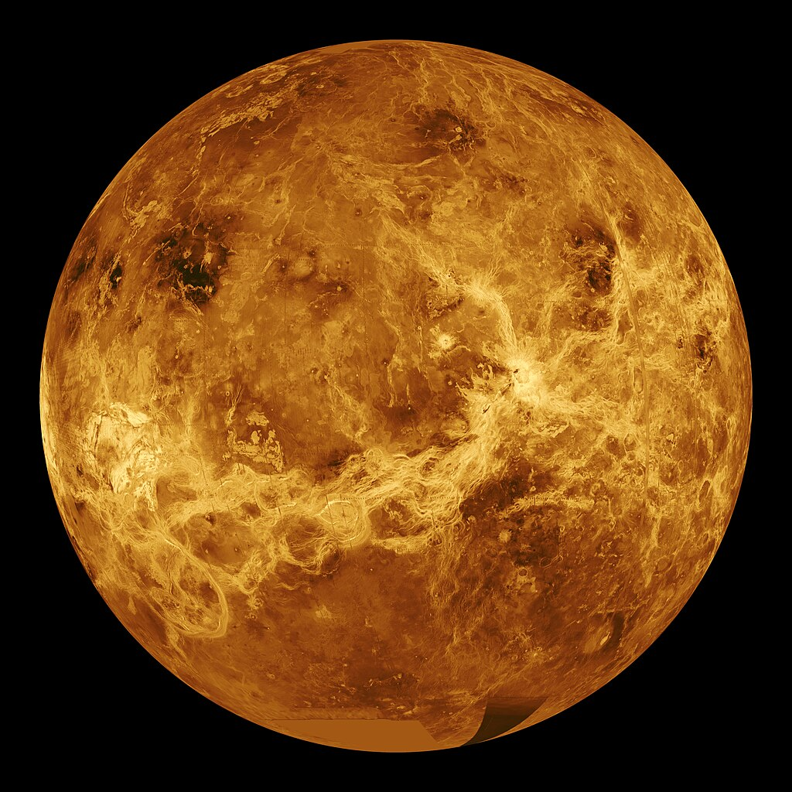
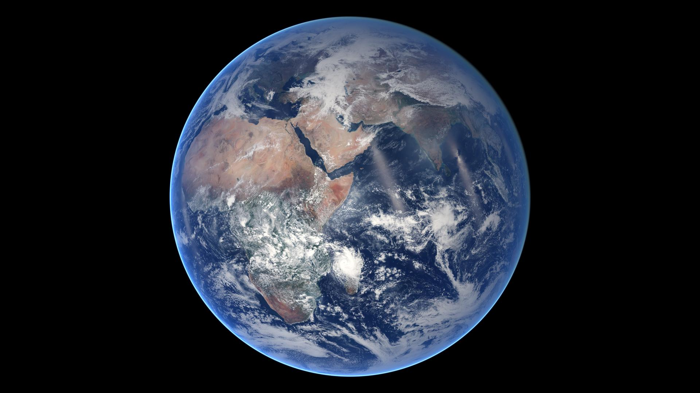
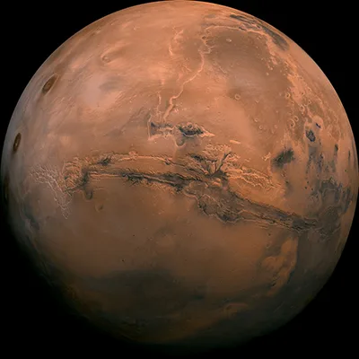

Solar System
Contents
What is the Solar System?
The Solar System is the gravitationally bound system of the Sun and the objects that orbit it. The largest of these objects are the eight planets, which in order from the Sun are four terrestrial planets (Mercury, Venus, Earth and Mars) two gas giants (Jupiter and Saturn) and two ice giants (Uranus and Neptune). The Solar System developed 4.6 billion years ago, when a molecular cloud was compressed, forming the Sun and a protoplanetary disc.
All four terrestrial planets belong to the inner Solar System and have solid surfaces. Inversely, all four giant planets belong to the outer Solar System and do not have a definite surface, as they are mainly composed of gases and liquids. 99.86% of the Solar System's mass is in the Sun and nearly 90% of the remaining mass are in Jupiter and Saturn. There is a strong consensus among astronomers that the Solar System also has nine dwarf planets, which consist of one asteroid-belt object – Ceres; five Kuiper-belt objects – Pluto, Orcus, Haumea, Quaoar, and Makemake; and three scattered-disc objects – Gonggong, Eris, and Sedna.
The Solar System formed 4.568 billion years ago from the gravitational collapse of a region within a large molecular cloud. This initial cloud was likely several light-years across and probably birthed several stars. As is typical of molecular clouds, this one consisted mostly of hydrogen, with some helium, and small amounts of heavier elements fused by previous generations of stars.
Sun

The Sun is the star at the center of the Solar System. It is a massive, hot ball of plasma, inflated and heated by energy produced by nuclear fusion reactions at its core. Part of this internal energy is emitted from its surface as light, ultraviolet, and infrared radiation, providing most of the energy for life on Earth.
The Sun moves around the Galactic Center of the Milky Way, at a distance of 26,660 light-years. From Earth, it is on average 1 AU (1.496×108 km) or about 8 light-minutes away. Its diameter is about 1,391,400 km (864,600 mi; 4.64 ls), 109 times that of Earth or 4 lunar distances. Its mass is about 330,000 times that of Earth, making up about 99.86% of the total mass of the Solar System. Roughly three-quarters of the Sun's mass consists of hydrogen (~73%); the rest is mostly helium (~25%), with much smaller quantities of heavier elements, including oxygen, carbon, neon, and iron.
The Sun is a G-type main-sequence star (G2V), informally called a yellow dwarf, though its light is actually white. It formed approximately 4.6 billion years ago from the gravitational collapse of matter within a region of a large molecular cloud. Most of this matter gathered in the center, whereas the rest flattened into an orbiting disk that became the Solar System. The central mass became so hot and dense that it eventually initiated nuclear fusion in its core. It is thought that almost all stars form by this process.
Every second, the Sun's core fuses about 600 million tons of hydrogen into helium, and in the process converts 4 million tons of matter into energy. This energy, which can take between 10,000 and 170,000 years to escape the core, is the source of the Sun's light and heat. Far in the future, when hydrogen fusion in the Sun's core diminishes to the point where the Sun is no longer in hydrostatic equilibrium, its core will undergo a marked increase in density and temperature which will push its outer layers to expand, eventually transforming the Sun into a red giant. This process will make the Sun large enough to render Earth uninhabitable approximately five billion years from the present. After this, the Sun will shed its outer layers and become a dense type of cooling star (a white dwarf), and no longer produce energy by fusion, but still glow and give off heat from its previous fusion for trillions of years. After that it is theorized to become a super dense black dwarf, giving off no more energy.
The enormous effect of the Sun on Earth has been recognized since prehistoric times; the Sun was thought of by some cultures as a deity. The synodic rotation of Earth and its orbit around the Sun are the basis of some solar calendars. The predominant calendar in use today is the Gregorian calendar, which is based upon the standard 16th-century interpretation of the Sun's observed movement as actual movement.
Mercury

Mercury is the first planet from the Sun and the smallest in the Solar System. It is a terrestrial planet with a heavily cratered surface due to overlapping impact events. These features are well preserved since the planet has no geological activity and an extremely tenuous atmosphere called an exosphere. Despite being the smallest planet in the Solar System with a mean diameter of 4,880 km (3,030 mi), 38% of that of Earth, Mercury is dense enough to have roughly the same surface gravity as Mars. Mercury has a dynamic magnetic field with a strength about 1% of that of Earth's and has no natural satellites.
According to current models, Mercury may have a solid silicate crust and mantle overlying a solid outer core, a deeper liquid core layer, and a solid inner core. Having almost no atmosphere to retain heat, Mercury has surface temperatures that change wildly during the day, ranging from 100 K (−173 °C; −280 °F) at night to 700 K (427 °C; 800 °F) during sunlight across the equator regions. At Mercury's poles there are large reservoirs of water ices that are never exposed to direct sunlight, which have an estimated mass of about 0.025–0.25% the Antarctic ice sheet. There are many competing hypotheses about Mercury's origins and development, some of which incorporate collision with planetesimal and rock vaporization.
Combined with its high orbital eccentricity, the planet's surface has widely varying sunlight intensity and temperature, with the equatorial regions ranging from −170 °C (−270 °F) at night to 420 °C (790 °F) during sunlight. Due to the very small axial tilt, the planet's poles are permanently shadowed. This strongly suggests that water ice could be present in the craters. Above the planet's surface is an extremely tenuous exosphere and a faint magnetic field that is strong enough to deflect solar winds. Mercury has no natural satellite.
As of the early 2020s, many broad details of Mercury's geological history are still under investigation or pending data from space probes. Like other planets in the Solar System, Mercury was formed approximately 4.5 billion years ago. Its mantle is highly homogeneous, which suggests that Mercury had a magma ocean early in its history, like the Moon. According to current models, Mercury may have a solid silicate crust and mantle overlying a solid outer core, a deeper liquid core layer, and a solid inner core. There are many competing hypotheses about Mercury's origins and development, some of which incorporate collision with planetesimals and rock vaporization.
As an inferior planet, Mercury is visible only as a "morning star" or "evening star" near the Sun, posing challenges for Earth observations. Further, it is difficult to send spacecraft from Earth to Mercury, because reaching the planet requires the greatest change in a spacecraft's velocity out of all Solar System's planets. Only three spacecraft have flown past Mercury as of 2024: Mariner 10 (first flyby in 1974), MESSENGER (2008) and BepiColombo (2021).
Venus

Venus is the second planet from the Sun. It has the densest atmosphere of all rocky bodies in the Solar System, so dense that at surface level and 92 atmospheres, it is a supercritical fluid. The planet's surface is dominated by volcanoes – there are 167 Venusian volcanoes that are over 100 km (60 mi) across. Venus has a diameter roughly equal to Earth's at 12,104 km (7,521 mi) and is classified as a terrestrial planet.
The surface of Venus has unique features of volcanic origin, such as 'farras' which are wide pancake-like lava domes and 'arachnoids' which are concentric fractures resembling spider webs. It is thought that the planet's crust is releasing internal heat through active volcanism and shaping the surface with large resurfacing. Above, Venus's atmosphere has a rough composition of 96.5% carbon dioxide, 3.5% nitrogen, and reflective sulfuric acid cloud cover. Venus has a weak induced magnetosphere.
Venus has a solar year that is 224.7 Earth days long and a solar day that is 117 Earth days long. Its dense atmosphere is the reason why the planet has a slow retrograde rotation and an extreme greenhouse effect. This is demostrated by Venus's average and consistent surface temperature of 464 °C (867 °F). Geological processes on Venus are relatively slow as shown by lack of erosion in craters, though there are some evidence that the planet still has active volcanism. Venus has no natural satellite.
Like other planets in the Solar System, Venus was formed approximately 4.5 billion years ago. As of the early 2020s, it is suggested that Venus's atmosphere might be similar to one surrounding the early Earth and there may have been substantial quantities of surface liquid water. Back then, Venus might have been more conducive to life. Over billions of years, solar forcing and large volcanic resurfacing may have eroded the initial atmosphere and created the new carbon dioxide-rich atmosphere.
Venus is the third brightest object in Earth's sky after the Moon and the Sun, therefore it has been important in human culture. Venus was the second planet to be visited by humans, with the first flyby by the Mariner 2 probe in 1962, the first atmospheric entry by the Venera 4 probe in 1967, the first successful landing by the Venera 8 probe in 1972 and the first orbiting probe by Venera 9 in 1975. As of 2024, there is no active probe on Venus, though it is a subject of three missions as a gravity assist waypoint.
Earth

Earth is the third planet from the Sun and the only astronomical object known to harbor life. This is enabled by Earth being a water world, the only one in the Solar System sustaining liquid surface water. Almost all of Earth's water is contained in its global ocean, covering 70.8% of Earth's crust. The remaining 29.2% of Earth's crust is land, most of which is located in the form of continental landmasses within one hemisphere, Earth's land hemisphere. Most of Earth's land is somewhat humid and covered by vegetation, while large sheets of ice at Earth's polar deserts retain more water than Earth's groundwater, lakes, rivers and atmospheric water combined. Earth's crust consists of slowly moving tectonic plates, which interact to produce mountain ranges, volcanoes, and earthquakes. Earth has a liquid outer core that generates a magnetosphere capable of deflecting most of the destructive solar winds and cosmic radiation.
Earth has a dynamic atmosphere, which sustains Earth's surface conditions and protects it from most meteoroids and UV-light at entry. It has a composition of primarily nitrogen and oxygen. Water vapor is widely present in the atmosphere, forming clouds that cover most of the planet. The water vapor acts as a greenhouse gas and, together with other greenhouse gases in the atmosphere, particularly carbon dioxide (CO2), creates the conditions for both liquid surface water and water vapor to persist via the capturing of energy from the Sun's light. This process maintains the current average surface temperature of 14.76 °C, at which water is liquid under atmospheric pressure. Differences in the amount of captured energy between geographic regions (as with the equatorial region receiving more sunlight than the polar regions) drive atmospheric and ocean currents, producing a global climate system with different climate regions, and a range of weather phenomena such as precipitation, allowing components such as nitrogen to cycle
Earth is rounded into an ellipsoid with a circumference of about 40,000 km. It is the densest planet in the Solar System. Of the four rocky planets, it is the largest and most massive. Earth is about eight light-minutes away from the Sun and orbits it, taking a year (about 365.25 days) to complete one revolution. Earth rotates around its own axis in slightly less than a day (in about 23 hours and 56 minutes). Earth's axis of rotation is tilted with respect to the perpendicular to its orbital plane around the Sun, producing seasons. Earth is orbited by one permanent natural satellite, the Moon, which orbits Earth at 384,400 km (1.28 light seconds) and is roughly a quarter as wide as Earth. The Moon's gravity helps stabilize Earth's axis, and also causes tides which gradually slow Earth's rotation. As a result of tidal locking, the same side of the Moon always faces Earth.
Earth, like most other bodies in the Solar System, formed 4.5 billion years ago from gas in the early Solar System. During the first billion years of Earth's history, the ocean formed and then life developed within it. Life spread globally and has been altering Earth's atmosphere and surface, leading to the Great Oxidation Event two billion years ago. Humans emerged 300,000 years ago in Africa and have spread across every continent on Earth with the exception of Antarctica. Humans depend on Earth's biosphere and natural resources for their survival, but have increasingly impacted the planet's environment. Humanity's current impact on Earth's climate and biosphere is unsustainable, threatening the livelihood of humans and many other forms of life, and causing widespread extinctions.
Mars

Mars is the fourth planet from the Sun. The surface of Mars is orange-red because it is covered in iron(III) oxide dust, giving it the nickname "the Red Planet". Mars hosts many enormous extinct volcanos (such as Olympus Mons, 21.9 km or 13.6 mi tall) and one of the largest canyons in the Solar System (Valles Marineris, 4,000 km or 2,500 mi long). For comparison, Mars's diameter is 6,779 km (4,212 mi). It is classified as a terrestrial planet and is the second smallest of the Solar System's planets.
When viewed closely, the relatively flat plains in northern parts of Mars strongly contrast with the cratered terrain in southern highlands – this terrain observation is known as the Martian dichotomy. Geologically, the planet is fairly active with marsquakes trembling underneath the ground, dust devils sweeping across the landscape, and cirrus clouds. Carbon dioxide are substantially present in Mars's polar ice caps and thin atmosphere.
In terms of orbital motion, a Martian solar day (sol) is equal to 24.5 hours and a Martian solar year is equal to 1.88 Earth years (687 Earth days). During a year, there are large surface temperature swings on the surface between −78.5 °C (−109.3 °F) to 5.7 °C (42.3 °F) similar to Earth's seasons, as both planets have significant orbital eccentricity and axial tilt. Mars has two natural satellites that are small and irregular in shape: Phobos and Deimos.
Mars was formed approximately 4.5 billion years ago. During the Noachian period (4.5 to 3.5 billion years ago), Mars's surface was marked by meteor impacts, valley formation, erosion, and the possible presence of water oceans. The Hesperian period (3.5 to 3.3–2.9 billion years ago) was dominated by widespread volcanic activity and flooding that carved immense outflow channels. The Amazonian period, which continues to the present, was marked by the wind as a dominant influence on geological processes. It is unknown whether life has ever existed on Mars.
Mars is among the brightest objects in Earth's sky and its high-contrast albedo features have make it a common subject for telescope viewing. Since the late 20th century, Mars has been explored by uncrewed spacecraft and rovers, with the first flyby by the Mariner 4 probe in 1965, the first Mars orbiter by the Mars 2 probe in 1971, and the first landing by the Viking 1 probe in 1976. As of 2023, there are at least 11 active probes orbiting Mars or at the Martian surface. Mars is an attractive target for future human exploration missions, though in the 2020s no such mission is planned.
Jupiter
Jupiter is the fifth planet from the Sun and the largest in the Solar System. It is a gas giant with a mass more than two and a half times that of all the other planets in the Solar System combined, and slightly less than one one-thousandth the mass of the Sun. Jupiter orbits the Sun at a distance of 5.20 AU (778.5 Gm) with an orbital period of 11.86 years. Jupiter is the third brightest natural object in the Earth's night sky after the Moon and Venus, and it has been observed since prehistoric times. It was named after Jupiter, the chief deity of ancient Roman religion.
Jupiter was the first planet to form, and its inward migration during the primordial Solar System impacted much of the formation history of the other planets. Jupiter is primarily composed of hydrogen (90% by volume), followed by helium, which makes up a quarter of its mass and a tenth of its volume. The ongoing contraction of Jupiter's interior generates more heat than the planet receives from the Sun. Its internal structure is believed to comprise an outer mantle of fluid metallic hydrogen, and a diffuse inner core of denser material. Because of its rapid rotation rate of 1 rotation per 10 hours, Jupiter's shape is an oblate spheroid: it has a slight but noticeable bulge around the equator. The outer atmosphere is divided into a series of latitudinal bands, with turbulence and storms along their interacting boundaries. The most obvious result of this is the Great Red Spot, a giant storm which has been observed since 1831 and possibly earlier.
Jupiter is surrounded by a faint planetary ring system and has a powerful magnetosphere, the second largest contiguous structure in the Solar System (after the heliosphere). Jupiter forms a system of 95 known moons and probably many more, including the four large moons discovered by Galileo Galilei in 1610: Io, Europa, Ganymede, and Callisto. Ganymede, the largest of the four, is larger than the planet Mercury. Callisto is the second largest; Io and Europa are approximately the size of Earth's Moon.
Saturn
Saturn is the sixth planet from the Sun and the second-largest in the Solar System, after Jupiter. It is a gas giant with an average radius of about nine-and-a-half times that of Earth. It has only one-eighth the average density of Earth, but is over 95 times more massive.
Saturn's interior is thought to be composed of a rocky core, surrounded by a deep layer of metallic hydrogen, an intermediate layer of liquid hydrogen and liquid helium, and finally, a gaseous outer layer. Saturn has a pale yellow hue due to ammonia crystals in its upper atmosphere. An electrical current within the metallic hydrogen layer is thought to give rise to Saturn's planetary magnetic field, which is weaker than Earth's, but which has a magnetic moment 580 times that of Earth due to Saturn's larger size. Saturn's magnetic field strength is around one-twentieth of Jupiter's. The outer atmosphere is generally bland and lacking in contrast, although long-lived features can appear. Wind speeds on Saturn can reach 1,800 kilometres per hour (1,100 miles per hour).
The planet has a prominent ring system, which is composed mainly of ice particles, with a smaller amount of rocky debris and dust. At least 146 moons are known to orbit the planet, of which 63 are officially named; this does not include the hundreds of moonlets in its rings. Titan, Saturn's largest moon and the second largest in the Solar System, is larger (while less massive) than the planet Mercury and is the only moon in the Solar System to have a substantial atmosphere.
Uranus
Uranus is the seventh planet from the Sun. It is a gaseous cyan-coloured ice giant. Most of the planet is made of water, ammonia, and methane in a supercritical phase of matter, which in astronomy is called 'ice' or volatiles. The planet's atmosphere has a complex layered cloud structure and has the lowest minimum temperature of 49 K (−224 °C; −371 °F) out of all the Solar System's planets. It has a marked axial tilt of 82.23° with a retrograde rotation rate of 17 hours. This means that in an 84-Earth-year orbital period around the Sun, its poles get around 42 years of continuous sunlight, followed by 42 years of continuous darkness.
Uranus has the third-largest diameter and fourth-largest mass among the Solar System's planets. Based on current models, inside its volatile mantle layer is a rocky core, and surrounding it is a thick hydrogen and helium atmosphere. Trace amounts of hydrocarbons (thought to be produced via hydrolysis) and carbon monoxide along with carbon dioxide (thought to have been originated from comets) have been detected in the upper atmosphere. There are many unexplained climate phenomena in Uranus's atmosphere, such as its peak wind speed of 900 km/h (560 mph), variations in its polar cap and its erratic cloud formation. The planet also has very low internal heat compared to other giant planets, the cause of which remains unclear.
Like the other giant planets, Uranus has a ring system, a large number of orbiting natural satellites, and a magnetosphere. Its ring system is extremely dark, with only about 2% of the incoming light reflected, and its satellite system contains 18 known regular moons, of which 13 are small inner moons. Further out are the larger five major moons of the planet: Miranda, Ariel, Umbriel, Titania, and Oberon. Orbiting at much greater distance from Uranus are the nine known irregular moons. The planet's magnetosphere is highly asymmetric and has many charged particles, which may be the cause the darkening of its rings and moons.
Uranus is visible to the naked eye, but it is very dim and was not classified as a planet until 1781, when it was first observed by William Herschel. About seven decades after its discovery, consensus was reached that the planet be named from the Greek god Uranus (Ouranos), one of the Greek primordial deities. As of 2023, it was visited up close only once when in 1986 the Voyager 2 probe flew by the planet. Though nowadays it can be resolved and observed by telescopes, there is much desire to revisit the planet, as shown by Planetary Science Decadal Survey's decision to make the proposed Uranus Orbiter and Probe mission a top priority in the 2023–2032 survey.
Neptune
Neptune is the eighth and farthest planet from the Sun. It is the fourth-largest planet in the Solar System by diameter, the third-most-massive planet, and the densest giant planet. It is 17 times the mass of Earth, and slightly more massive than its near-twin Uranus. Neptune is denser and physically smaller than Uranus because its greater mass causes more gravitational compression of its atmosphere. Being composed primarily of gases and liquids, it has no well-defined solid surface. The planet orbits the Sun once every 164.8 years at an orbital distance of 30.1 astronomical units (4.5 billion kilometres; 2.8 billion miles). It is named after the Roman god of the sea and has the astronomical symbol ♆, representing Neptune's trident.
Neptune is not visible to the unaided eye and is the only planet in the Solar System found by mathematical predictions rather than by empirical observation. Unexpected changes in the orbit of Uranus led Alexis Bouvard to hypothesise that its orbit was subject to gravitational perturbation by an unknown planet. After Bouvard's death, the position of Neptune was predicted from his observations, independently, by John Couch Adams and Urbain Le Verrier. Neptune was subsequently observed with a telescope on 23 September 1846 by Johann Gottfried Galle within a degree of the position predicted by Le Verrier. Its largest moon, Triton, was discovered shortly thereafter, though none of the planet's remaining 14 known moons were located telescopically until the 20th century. The planet's distance from Earth gives it a very small apparent size, making it challenging to study with Earth-based telescopes. Neptune was visited by Voyager 2, when it flew by the planet on 25 August 1989; Voyager 2 remains the only spacecraft to have visited Neptune. The advent of the Hubble Space Telescope and large ground-based telescopes with adaptive optics has allowed for additional detailed observations from afar.
Like the gas giants (Jupiter and Saturn), Neptune's atmosphere is composed primarily of hydrogen and helium, along with traces of hydrocarbons and possibly nitrogen, but contains a higher proportion of ices such as water, ammonia and methane. Similar to Uranus, its interior is primarily composed of ices and rock; both planets are normally considered "ice giants" to distinguish them. Along with Rayleigh scattering, traces of methane in the outermost regions in part account for the planet's blue appearance. The blue colour is slightly more saturated than that of Uranus due to the thinner haze of Neptune's more active atmosphere.
In contrast to the strongly seasonal atmosphere of Uranus, which can appear featureless for long periods of time, Neptune's atmosphere has consistently active and visible weather patterns. For example, at the time of the Voyager 2 flyby in 1989, the planet's southern hemisphere had a Great Dark Spot comparable to the Great Red Spot on Jupiter. In 2018, a newer main dark spot and smaller dark spot were identified and studied. These weather patterns are driven by the strongest sustained winds of any planet in the Solar System, with recorded wind speeds as high as 2,100 km/h (580 m/s; 1,300 mph). Because of its great distance from the Sun, Neptune's outer atmosphere is one of the coldest places in the Solar System, with temperatures at its cloud tops approaching 55 K (−218 °C; −361 °F). Temperatures at the planet's centre are approximately 5,400 K (5,100 °C; 9,300 °F). Neptune has a faint and fragmented ring system (labelled "arcs"), which was discovered in 1984, then later confirmed by Voyager 2.
Source
- https://en.wikipedia.org/wiki/Solar_System
- https://en.wikipedia.org/wiki/Sun
- https://en.wikipedia.org/wiki/Mercury_(planet)
- https://en.wikipedia.org/wiki/Venus
- https://en.wikipedia.org/wiki/Earth
- https://en.wikipedia.org/wiki/Mars
- https://en.wikipedia.org/wiki/Jupiter
- https://en.wikipedia.org/wiki/Saturn
- https://en.wikipedia.org/wiki/Uranus
- https://en.wikipedia.org/wiki/Neptune
Website made by Haziq Hazim